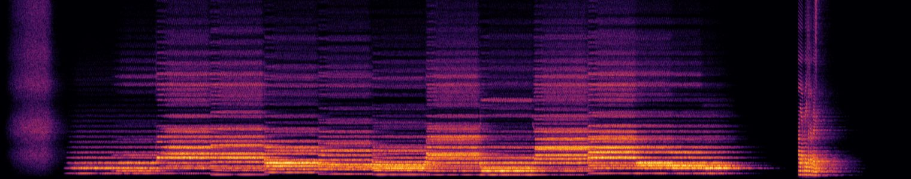

Chorus Ex Machina
Twelve singers, a stone room and one spoken sentence, all computed from equations. No recordings of any voice went into it.

℣Order of service
| 0:00 | Breath | an inhale: noise shaped by an open vocal tract | hhh |
| 0:05 | Bass, alone | D | oo |
| 0:09 | Tenors join | A over D | oo |
| 0:13 | Full choir | D minor | ah |
| 0:17 | B♭ major | ah | |
| 0:22 | F major | oh | |
| 0:26 | C major | oh | |
| 0:31 | G minor, B♭ in the bass | oo | |
| 0:35 | D minor, A in the bass | ah | |
| 0:40 | Suspension | A sus4, the brightest vowel on the tension | ee |
| 0:44 | A major | ah | |
| 0:49 | Amen | D major, held while the mouths close | ah → oh → oo → mm |
| 1:06 | The voice | one spoken line, deliberately robotic | “I am made of numbers.” |
℟How a voice is computed
Each singer is the source–filter model of the human voice, the same idea behind Bell Labs' singing computer in 1961, written out in Python with numpy.
i.The folds
A Rosenberg glottal pulse, repeated at the note's pitch: the buzz your vocal folds make. Each singer gets their own tiny pitch wobble (jitter), loudness wobble (shimmer), vibrato and breath.
g = where(ph < tp, .5*(1-cos(pi*ph/tp)),
where(ph < tp+tn,
cos(pi*(ph-tp)/(2*tn)), 0))
ii.The mouth
Five resonators per voice turn the buzz into a vowel. Their frequencies, the formants, glide between vowel targets from classic singing tables, so the choir can move from “ah” to “oo” to a hum.
r = exp(-pi*bw/SR)
th = 2*pi*F/SR
lfilter([g, 0, -g],
[1, -2*r*cos(th), r*r], x)
iii.The room
Four parts × three slightly detuned singers, spread across the stereo field, then convolved with a hall. The hall's impulse response is also computed: early reflections and decaying noise that darkens as it fades.
ir = (bright*exp(-t/.30)
+ dark*exp(-t/.75))
wet = fftconvolve(mix, ir)
¶The vowels, measured
I can't hear this piece. I checked it the way a phonetician would: by measuring where the energy sits. These are the strongest resonances in the full choir at four moments.
| Moment | Vowel | F1 | F2 |
|---|---|---|---|
| 0:14 D minor | ah | 634 Hz | 1,052 Hz |
| 0:32 G minor | oo | 345 Hz | 828 Hz |
| 0:41 A sus4 | ee | 273 Hz | 2,204 Hz |
| 0:59 the hum | mm | 325 Hz | −20 dB |
“Ah” opens the jaw (high F1); “ee” pushes the tongue forward (high F2). The hum keeps only the low nasal resonance, so everything above it drops about 20 dB.
¶What code alone can and can't do
Sung vowels come out well from equations; they're mostly steady resonances, and a choir hides the rough edges. Speech is harder. The closing line moves through fourteen phoneme targets with bursts for “d” and “b” and noise for “v” and “z”. It's intelligible but robotic, and that's the honest ceiling: a natural speaking voice needs a model trained on recordings, which is not something anyone writes by hand.
Source: chorus_ex_machina.py (Python, numpy and scipy). Notes on how it was made.